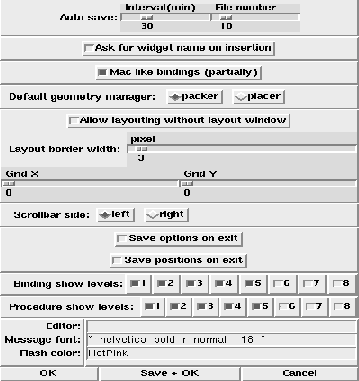
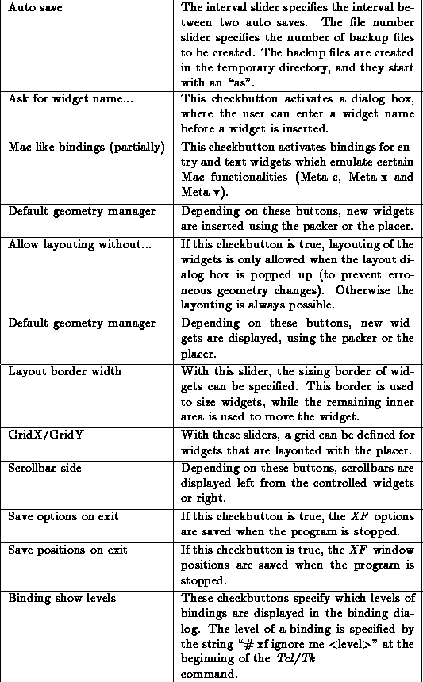

This dialog box provides access to the general XF options.
 Figure: The procedure XFProcOptionsGeneral
The single options have the following meanings (some option names may be abbreviated):
Option name & Purpose
